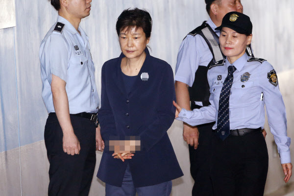

박근혜 전 대통령이 항소를 포기했습니다.
이에 따라서 2심 재판은 검찰이 항소한 내용을 중심으로 진행되는데, 박 전 대통령 2심 재판에도 나오지 않을 것으로 보입니다.
1심서 징역 24년을 선고받은 박근혜 전 대통령은 16일 법원에 항소포기서를 제출했습니다.
1심 선고 직후 동생 근령씨가 제출했던 항소장에 대한 포기 의사를 밝힌 겁니다. 박 전 대통령이 항소를 포기함에 따라 2심 재판은 검찰이 제시한 항소 이유를 중심으로 이뤄집니다.
검찰이 2심에서 입증할 쟁점 중 핵심은 '삼성의 경영권 승계' 청탁이 있었냐는 겁니다.
지난해 10월 법원이 구속기간을 연장한 데 반발해 모든 재판에 불출석한 박 전 대통령이 항소까지 포기함에 따라 2심 재판도 궐석 재판으로 진행될 전망입니다.